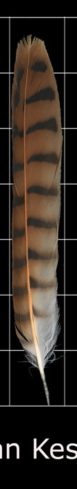
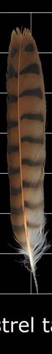
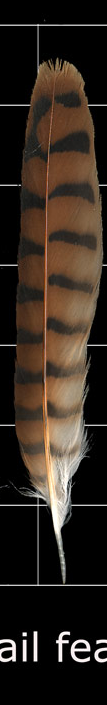
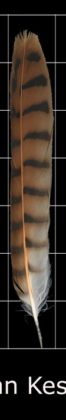
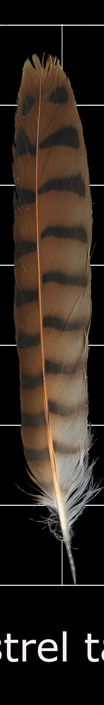
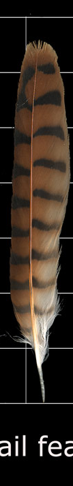

This project pulls feathers from the Federal Wildlife Service Feather atlas and uses Delaunay triangulation to make interesting bird themed collages. The planned app will allow for the user to select feathers based on taxonomical hierarchy. Additionally, there will be various parameters which will affect the exact Delaunay triangulation. The feathers within the feather atlas are stored with multiple feathers in an image, so part of the extraction process will be seperating individual feathers into their own images. Feathers will be triangulated individually and will have optional recoloring settings in order to emphasize the already existing colors of some feathers or completely recolor them. Once triangulated, feathers will be overlaid semi-randomly into collages.
This project takes a well tread problem in computational geometry, making art with Delaunay Triangulation, and adds an extra layer of complexity. By choosing a specific dataset - the feather atlas - we can tailor our solution for feathers. This comes in the form of preprocessing done on the feather atlas images. Since all of the images on the feather atlas keep many feathers in one image, our solution must first extract feathers individually and remove any undesirable parts like text or gridlines. This is done through various computer vision techniques. Preprocessed data can then be given to our generic Delaunay implementation to create artistic representations of feathers. SVGs are used as the output method because their resolution is essentially infinite.
Our project has two major pieces, preprocessing of feather images, and triangulation. The the preprocessing part takes a raw image from the feather atlas. This outputs a series of images that are each of the feathers from the source image, separated. These are to be stored on the server with the website code. We have a script that downloads all of the feather atlas images, and another that goes through and separates all of the feathers and gives each source image its own directory. The Delaunay section takes in a number of inputs. These include:


 







Since this is an artistic endeavor, we did not seek to find an optimal solution. We only care if the final feather collage looks nice, not whether it is the best solution. As such, we do things during delaunay triangulation like discarding points if they are collinear with points in potential triangles. Also for separating feathers, we don't seek perfect separation, since that is a difficult problem, more suited for something like a CNN. Using basic means, perfect separation for all types of feathers would be nigh impossible.
There are a number of projects on github that are also doing Delaunay art. We took some inspiration from these in the form of the Delaunay algorithm we picked. Most of these projects use a variant of Bowyer Watson with one of the edge removal steps taken out. This led us to pick (a more traditional) Bowyer Watson as our Delaunay algorithm.
Esimov's "Triangle"For the sake of organization, we will talk about the overall pipe here, and go in depth in later sections.
The first part of feather separation is figuring out if the background of the image is blue or black, as the Feather Atlas uses either one for their images. We do this by sampling the pixel at 0,0 and seeing if it has a significant amount of blue. If it does, we use the blue separation routine, other we use black.
In the black separation routine, we start by attempting to cut text off the top and bottom of the image, so we are left with just feathers. We start by converting the image to greyscale Then we take the sum of all pixels in a row, and make a 1D signal and smoothing it with a gaussian filter. We look for the global maximum, as this is usually where feathers are, and cut from the lowest minima before it to the lowest minima after. This doesn't give excellent cuts, but it works in the general case. Next we do the same thing, but taking the sum of rows to get the horizontal signal. We always cut the image starting at the first two peaks to remove the axis labels. Then we just cut at minima to get individual feathers.
Blue backgrounds use a similar method, except we look at the blue channel of the image (no grayscale). Now we make our cuts at blue channel maxima rather than minima.

Our first step here is grid removal. This is achieved through a morphological erode, followed by a morphological dilation. These apply a filter with dimensions Nx1 or 1xN (for vert or horizontal). The filter looks at the neighbors of the center pixel horizontally or vertically and makes its value that of the smallest neighbot for erosion, or greatest for dilation. Performing these operations in succession achieves the removal of thin horizontal or vertical lines. We apply the filter horizontally and vertically, and-ing together the results of each. we then remove noise with a median filter. This method of removal has a nasty habit of removing chunks of feather, which could be reduced with tuning of the filter sizes. This is not feasible, however, because different feathers may require different values, meaning a human needs to fine tune by hand. Our system attempts to be automated.
The grid removal returns a binarized image, where white pixels are part of the feather. This is used to clip pixels from the original image into a new one that only includes the feather (or what's left of it). Our next step is to convert our image to grayscale and blur it. Blurring here is done to widen features to get more points when we do edge detection.
The blurred image is then run through an edge detector specified by the user. Canny gives clean edges with sparse internals. Sobel gives messy edges with more internal points.
Next we sample points from the edge detected image. We do this by going throught the image pixel by pixel and selecting one only if it and its neighbors have an average value specified by the threshold input param. This is mostly for Sobel edges, which are not one pixel wide, and may be various shades of gray. Then if the number of points exceeds the user defined percentage of points to use, we sample points from our current list to reduce the number in use.


Next we triangulate the sampled points using Bowyer Watson, which is a random incremental algorithm for Delaunay Triangulation. Our implementation of BW is fairly standard. The main difference is that we have to deal with the occasional collinear point triangle, and we do that by just discarding the point. This algorithm takes O(NlogN) in the general case, but degenerate cases may bring that to O(N^2).

Our next step is coloring the feathers. This is done simply by averaging the three vertices of each triangle to get the center, and using that pixel value to color the triangle. This is done simply with SVGs as there is a fill option that you feed vertices.
Last is generating random transformations. This is also very simple. We generate a random angle and then rotate every point in every triangle around an arbitrary point in the triangulation. We then shift every point by a random translation amount to get the feather's final location.
| Subject | Ray Dodds | Jonathan Schenk | Shared |
|---|---|---|---|
| Web page Scraping | X | ||
| Feather Seperation | X | ||
| Edge Detection | X | ||
| Delaunay Triangulation | X | ||
| Image Recoloring | X | ||
| Image Overlay | X | ||
| Web page development | X |